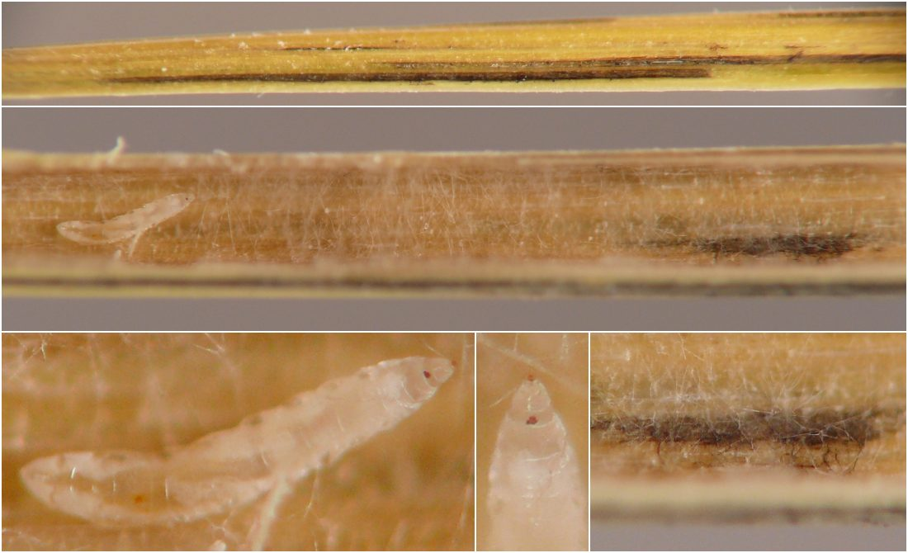

Local feeder (Diptera) in stems of Festuca
| Record no.: | 0813 |
|---|---|
| Feeding guild: | Local feeder in stem |
| Taxonomy: | Diptera: cf. Cecidomyiidae |
| Stages observed: | trace, larva |
| Distribution observed: | IA |
| Hosts in Festuca: | F. subverticillata (nodding fescue) |
This Diptera larva (cf. Cecidomyiidae) shared a Festuca subverticillata culm internode with a larva of Thrypticus (Diptera: Dolichopodidae, record 0812). The former larva was positioned near a patch of black fungal mycelia on the inner wall of the culm, a few centimeters above the Thrypticus larva. The hollow space within this stretch of culm had also filled loosely with what appeared to be whitish fungal mycelia.
I found the two larvae sharing the culm on 23 August 2026. By 31 August, the larva in question, which I was keeping in a rearing container, had crawled off the sectioned culm piece and onto the wall of the rearing container, where it spun an elongate, white cocoon, also consistent with Cecidomyiidae as the tentative identification.
Information about this larva and its Thrypticus associate is also available at Host associations, feeding traces, larval morphology, and other observations on the life histories of culm borer flies in the genus Thrypticus (Diptera: Dolichopodidae) from the Upper Midwest, USA.

 Prev
Prev
{kind=link}
Page created: August 28, 2026. Last update: September 2, 2026